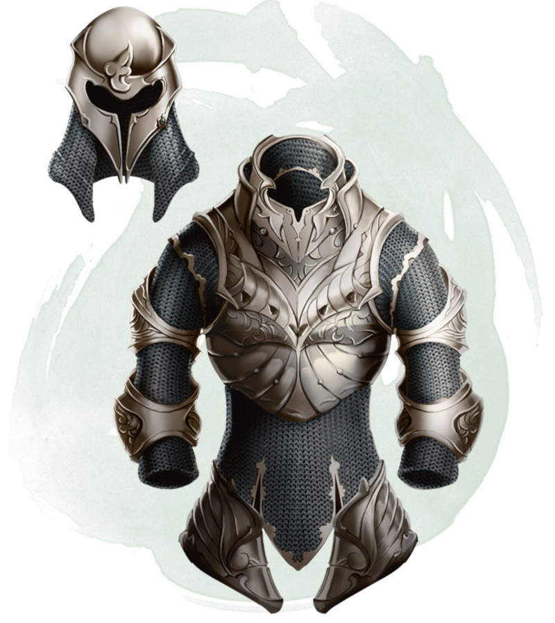

Armor of Resistance
Armor (light medium or heavy), rare (requires attunement)
You have resistance to one type of damage while you wear this armor. The DM chooses the type or determines it randomly from the options below.
| d10 | Damage Type |
|---|---|
| 1 | Acid |
| 2 | Cold |
| 3 | Fire |
| 4 | Force |
| 5 | Lightning |
| 6 | Necrotic |
| 7 | Poison |
| 8 | Psychic |
| 9 | Radiant |
| 10 | Thunder |
Dungeon Master´s Guide (SRD)
